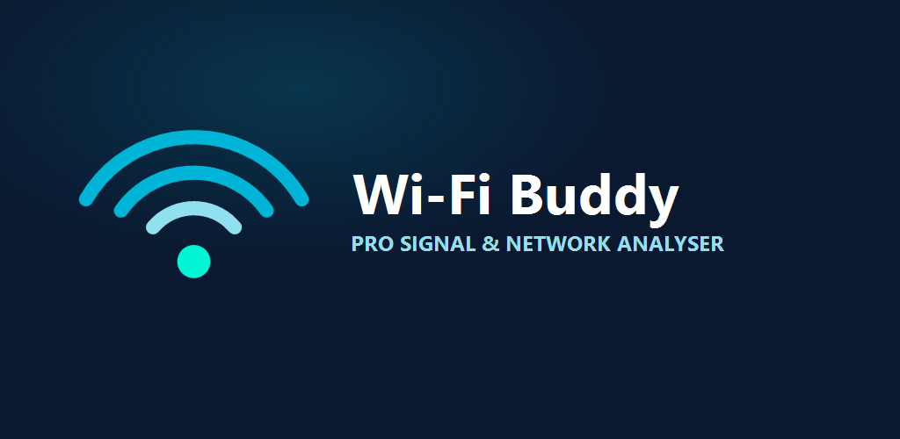
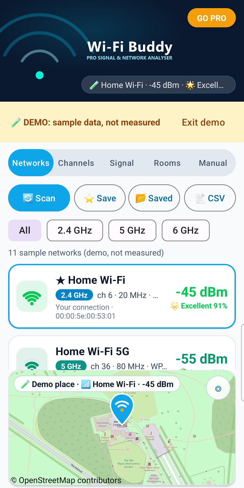
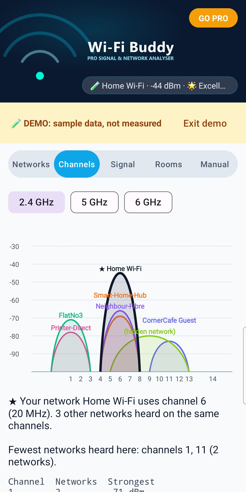
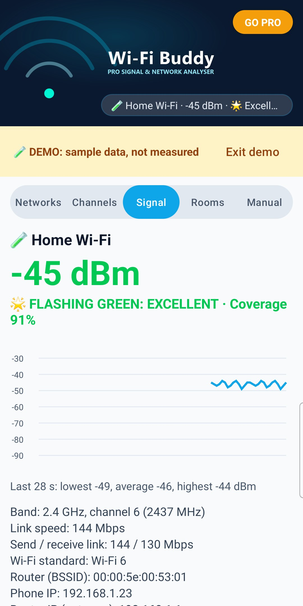
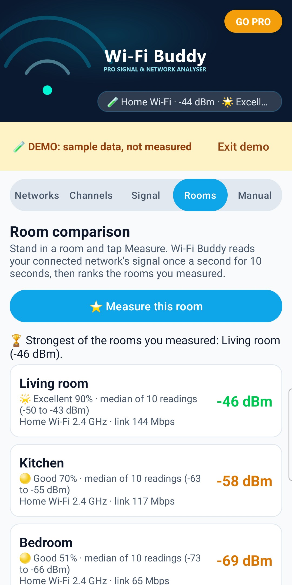

How Wi-Fi Buddy works, step by step
Wi-Fi Buddy shows what your phone measures: the Wi-Fi networks it can hear, the channels they use, and the live signal of the network you're connected to. Every number comes from Android's own Wi-Fi readings.
It can't make your Wi-Fi faster by itself. It helps you see where the signal is weak and which channels are crowded, so you can move your router, change its channel in the router's settings, or pick a better spot.
Android only gives the list of nearby Wi-Fi networks to apps with precise location permission, and only while Location is switched on. That's Android's rule for every Wi-Fi app.
dBm is how strong the signal reaches your phone: closer to 0 is stronger. Wi-Fi Buddy rates it with the same Coverage maths as Cell Tower Finder and CellCoverage: Coverage score = (dBm + 100), counted from 0 to 60 as 0 to 100%, kept between 10% and 98%.
Real speed also depends on the router, interference and how many devices share the network.
This is only what your phone heard where it is now. Your router may hear different networks, so "fewest networks heard" is a hint, not a guarantee. To change channel, use your router's settings or app.
Android updates the signal every few seconds. Link speed is the radio link between phone and router, not your internet speed.
Find the room with the strongest Wi-Fi:
1. Stand where you'd use Wi-Fi and tap 📏 Measure this room.
2. Pick or type a room name and tap Start. Keep still for 10 seconds: Wi-Fi Buddy reads your connected network's signal once a second.
3. Repeat in other rooms.
Rooms are ranked by the median of their 10 readings (the middle value, as CellCoverage's Blueprint), with the Coverage score and level. 🏆 marks the strongest of the rooms you measured. If rooms are within 2 dB of each other, Wi-Fi Buddy says they're too close to call. Measuring a room again with the same name replaces its reading. If rooms were measured on different networks or bands, it says so.
Tap 🧪 Try the demo (Manual tab, or the card at the top when Wi-Fi Buddy can't scan) to see every screen with sample networks, a sample connection and sample rooms. A yellow strip says DEMO: sample data, not measured, and exports made in the demo say DEMO too.
In the demo you can try the Rooms list, CSV and the PDF report for free. Measuring rooms and saving scans use your real Wi-Fi, so they need the demo switched off. Tap Exit demo to go back to your real Wi-Fi.
Pro is one payment for life. No subscription.
Tap GO PRO at the top. Already bought it, or on a new phone with the same Google account? Tap Restore purchase.
Wi-Fi Buddy v1.0 (Build 1)
Publisher: AppStack Studio
Wi-Fi Buddy shows what your own phone measures, rated with the same Coverage maths as Cell Tower Finder and CellCoverage, and it tells you plainly what Android does and doesn't allow.
| Feature | Android's Wi-Fi settings | Wi-Fi Buddy |
|---|---|---|
| Signal of every nearby network | Signal bars only | Measured dBm, Coverage score and level for each network |
| Which channels are crowded | Not shown | Channel graph and "fewest networks heard here" |
| Live signal while you walk round | Not shown | Live dBm, 90-second graph, flashing green when Excellent |
| Room-by-room comparison | Not available | ⭐ Pro: rooms ranked by median signal, with a PDF report |
| Price | Built in | Free, Pro is one payment for life (no subscription) |

1. Networks
Every network heard, with its signal, band, channel and Coverage level, and the map.

2. Channels
Each network drawn across its channels, and the fewest networks heard.

3. Signal
Your live signal, Coverage score and graph: flashing green when Excellent.

4. Rooms (Pro)
Rooms ranked by their median signal.
Screenshots show the app's built-in demo (sample data, not measured), with a sample place on the map.